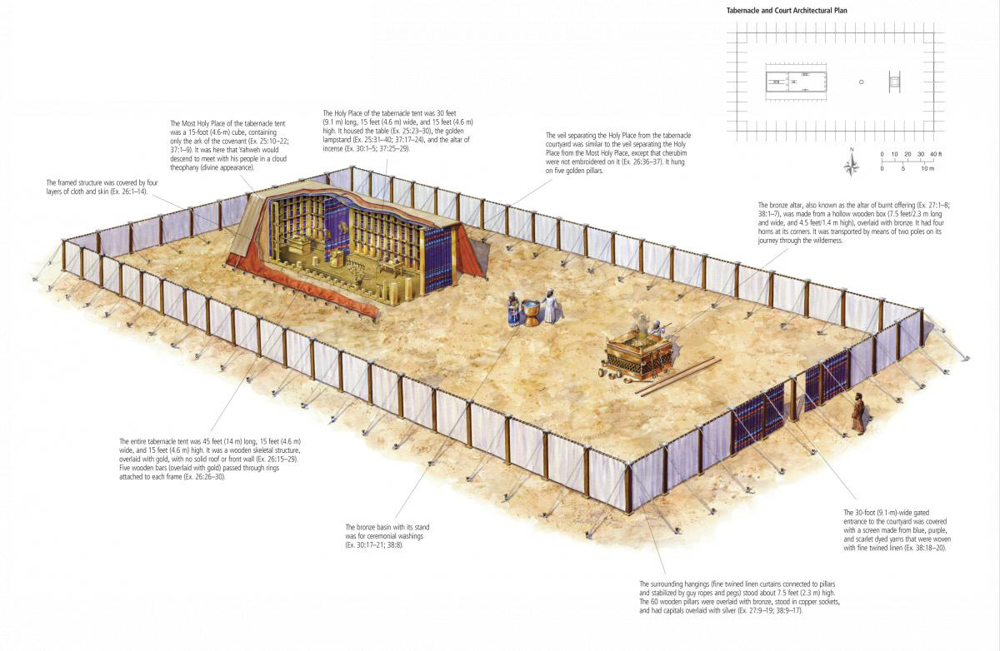
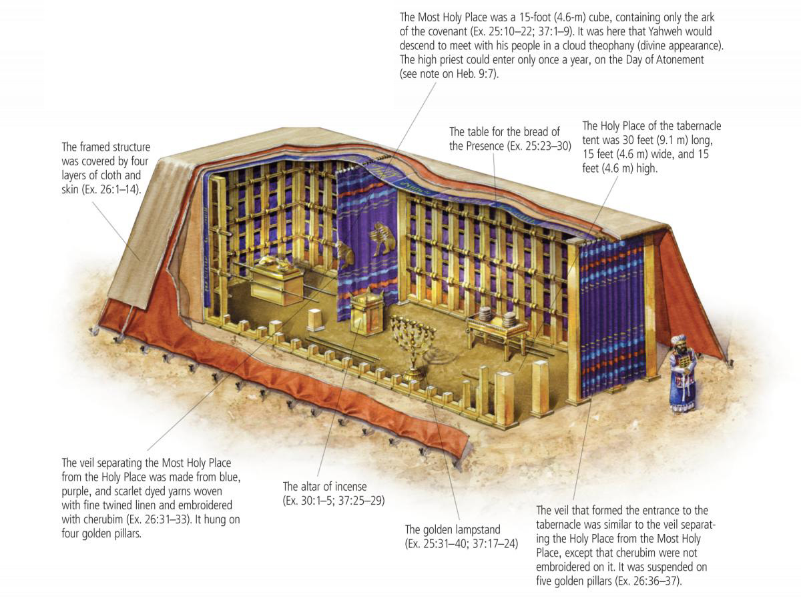
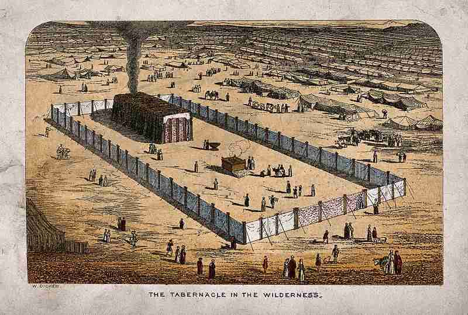
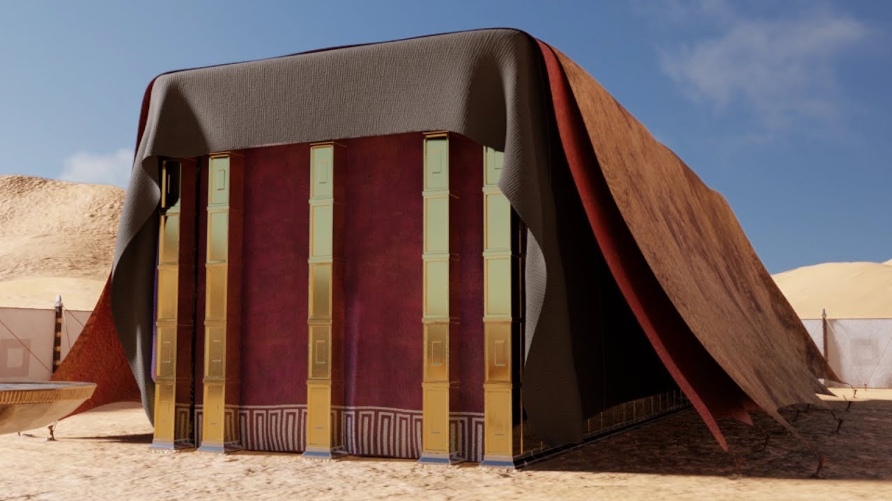

Êxodo 25-40
Período: ~1446-1445 a.C. (Construção do Tabernáculo)
O Tabernáculo (Mishkan em hebraico, "habitação") foi o santuário portátil construído por Israel no deserto, seguindo as instruções detalhadas dadas por Deus a Moisés no Monte Sinai. Suas dimensões eram aproximadamente 13,7m x 4,6m x 4,6m (45 x 15 x 15 pés), com um pátio externo de 45,7m x 22,9m (150 x 75 pés).
Simbolismo: Cada elemento tinha significado teológico profundo: a Arca da Aliança (presença de Deus), o Candelabro de Ouro (luz divina), a Mesa dos Pães (provisão), o Altar de Incenso (oração), o Altar de Holocaustos (sacrifício) e a Pia de Bronze (purificação). O Tabernáculo prefigurava Cristo como "Deus conosco" (João 1:14).
Visão aérea mostrando o pátio externo, o Lugar Santo e o Santíssimo Lugar, com todos os móveis sagrados em suas posições.

Fonte: Growing Godly Generations - Biblical Tabernacle Reconstruction
Visão detalhada do interior mostrando o Candelabro de Ouro (Menorá), a Mesa dos Pães da Proposição e o Altar de Incenso.

Fonte: Growing Godly Generations - Tabernacle Interior Details
Reconstrução artística mostrando o Tabernáculo montado no acampamento de Israel, com a nuvem da glória de Deus sobre ele.

Fonte: A Sweet Savor - Historical Tabernacle Illustration
Reconstrução tridimensional baseada nas especificações bíblicas de Êxodo 25-40, mostrando detalhes arquitetônicos.

Fonte: 3D Tabernacle of Moses - Archaeological Reconstruction
Os capítulos 25 a 40 do livro de Êxodo detalham as instruções divinas para a construção do Tabernáculo, a apostasia do bezerro de ouro, a intercessão de Moisés e, finalmente, a gloriosa habitação de Deus no santuário. Versículos chave incluem:
Os capítulos finais de Êxodo, do 25 ao 40, constituem uma seção de profunda importância teológica e estrutural para a narrativa do Pentateuco. Este bloco temático se divide em duas grandes partes: as instruções detalhadas para a construção do Tabernáculo e seus utensílios (Êxodo 25-31), e a execução dessas instruções (Êxodo 35-40), intercaladas pelo dramático episódio do bezerro de ouro e a subsequente intercessão de Moisés (Êxodo 32-34). A justaposição desses eventos não é acidental, mas serve para sublinhar a tensão entre a santidade divina e a pecaminosidade humana, e a persistência da graça de Deus em meio à falha de seu povo.
O Tabernáculo, com sua arquitetura e rituais meticulosamente prescritos, representa o ponto culminante da libertação de Israel do Egito. Ele não é apenas uma estrutura física, mas o símbolo tangível da presença de Deus no meio de seu povo. Através do Tabernáculo, Deus estabelece um meio pelo qual Ele pode habitar com Israel, apesar de sua impureza, e onde a adoração e a expiação podem ser realizadas. Este santuário portátil serve como um lembrete constante da aliança e da soberania de Yahweh, e da necessidade de santidade para se aproximar d'Ele.
O incidente do bezerro de ouro, por sua vez, revela a fragilidade da fé de Israel e sua propensão à idolatria, mesmo após testemunhar os poderosos atos de Deus no Egito e no Sinai. A intercessão de Moisés neste momento crítico demonstra a natureza mediadora de sua liderança e a compaixão divina que prevalece sobre a ira justa. A restauração da aliança e a renovação das tábuas da Lei, seguidas pela glória de Deus enchendo o Tabernáculo, reafirmam o compromisso de Yahweh com seu povo e o propósito de sua presença: guiar, proteger e santificar Israel em sua jornada rumo à Terra Prometida.
Este bloco, portanto, não apenas descreve a construção de um local de adoração, mas também explora a dinâmica complexa da relação entre Deus e Israel, marcada pela graça, aliança, pecado e redenção. Ele estabelece os fundamentos para a compreensão da adoração e da presença divina que permearão toda a história de Israel e apontarão para a futura encarnação de Deus em Jesus Cristo.
O período em que os eventos de Êxodo 25-40 se desenrolam é tradicionalmente situado no Novo Reino do Egito (aproximadamente 1550-1070 a.C.), uma era de grande poder e influência egípcia no Antigo Oriente Próximo. Durante este tempo, faraós como Tutmés III, Amenófis III, Aquenáton, Tutancâmon, Seti I e Ramsés II governaram um império vasto, estendendo seu domínio até a Síria e a Núbia. A sociedade egípcia era altamente estratificada, com o faraó no topo como um deus-rei, seguido por uma elite de sacerdotes, nobres e escribas. A religião egípcia era politeísta, com um panteão complexo de deuses e deusas, e a vida cotidiana era permeada por rituais, mitos e crenças na vida após a morte. Templos monumentais, como os de Karnak e Luxor, eram centros de adoração e poder, e a arte egípcia, com sua ênfase na durabilidade, na ordem e na representação simbólica, reflete uma cosmovisão profundamente religiosa [1].
Há debates acadêmicos significativos sobre a cronologia exata do Êxodo. A datação mais comum para o Êxodo, que se alinha com a construção do Tabernáculo, aponta para meados do século XV a.C. (c. 1446 a.C.), durante a XVIII Dinastia, ou para o século XIII a.C. (c. 1290-1224 a.C.), durante a XIX Dinastia, sob faraós como Ramsés II. Independentemente da datação precisa, o contexto do Novo Reino egípcio é crucial para entender a magnitude da libertação de Israel e a singularidade de sua fé monoteísta em um ambiente politeísta. A grandiosidade e o simbolismo do Tabernáculo israelita, com sua arquitetura e arte sacra, podem ser vistos tanto em contraste quanto em diálogo com a estética e a teologia egípcias, embora com um propósito e significado radicalmente diferentes [2].
As práticas culturais egípcias e israelitas apresentavam contrastes marcantes, mas também algumas semelhanças superficiais que ressaltam a distinção teológica. Enquanto os egípcios adoravam um panteão de deuses e deusas, com rituais elaborados e sacrifícios em templos fixos e permanentes, os israelitas, sob a aliança mosaica, foram chamados a adorar um único Deus, Yahweh, através de um sistema sacrificial e ritualístico centrado no Tabernáculo. A ideia de um santuário portátil, como o Tabernáculo, era incomum no Antigo Oriente Próximo, onde os templos eram geralmente estruturas permanentes ligadas a cidades específicas e a divindades locais. No entanto, a mobilidade do Tabernáculo refletia a natureza nômade de Israel no deserto e a presença itinerante de Deus com seu povo, sublinhando a natureza dinâmica e relacional da aliança [3]. A legislação mosaica, incluindo as leis sobre pureza e sacrifício, distinguia Israel das nações vizinhas, estabelecendo um padrão de santidade que refletia o caráter de Yahweh e a sua demanda por exclusividade na adoração. O contraste entre a adoração ao bezerro de ouro, uma prática que ecoa cultos de fertilidade cananeus e egípcios, e a adoração a Yahweh no Tabernáculo, é fundamental para entender a singularidade da fé israelita [4].
A geografia desempenha um papel crucial na narrativa de Êxodo, moldando a experiência de Israel e a revelação divina. Após a saída do Egito, os israelitas viajaram pelo deserto do Sinai, uma região árida e montanhosa, caracterizada por vastas extensões de areia, rochas e wadis (leitos de rios secos). O Monte Sinai (também conhecido como Horebe) é o local central onde Deus se revela a Moisés e entrega a Lei, incluindo as instruções detalhadas para o Tabernáculo. A localização exata do Monte Sinai é um tema de intenso debate acadêmico e arqueológico, com teorias que variam desde o tradicional Jabal Musa no sul da Península do Sinai até locais na Arábia Saudita, como Jabal al-Lawz, ou mesmo no norte do Sinai. A paisagem desértica, com sua hostilidade e escassez de recursos, serviu como um cenário para a dependência total de Israel em relação a Deus e para a manifestação contínua de sua provisão milagrosa, como o maná e a água da rocha. A rota do Êxodo, embora incerta em seus detalhes, foi uma jornada de transformação para o povo, de escravos a uma nação sob a aliança de Yahweh [5].
A arqueologia relevante para o período do Êxodo e a construção do Tabernáculo é complexa e muitas vezes interpretada de diferentes maneiras, devido à natureza nômade de Israel e à escassez de evidências diretas. Embora não haja evidências arqueológicas diretas do Tabernáculo em si (dada sua natureza portátil e materiais perecíveis, como madeira, tecidos e peles), descobertas em sítios egípcios e cananeus fornecem insights valiosos sobre as práticas religiosas e a cultura material da época. Por exemplo, a arquitetura de templos egípcios e a iconografia religiosa podem oferecer paralelos e contrastes com o design e o simbolismo do Tabernáculo, como a ideia de um espaço sagrado que abriga a presença divina. A descoberta de altares e objetos de culto em locais como Timna, no deserto do Sinai, sugere a existência de práticas religiosas na região durante o período do Bronze Final e do Ferro Inicial, que podem ter alguma relação com a narrativa do Êxodo. A pesquisa arqueológica no Sinai e em outras regiões do Antigo Oriente Próximo continua a enriquecer nossa compreensão do contexto em que a narrativa de Êxodo se desenrola, ajudando a iluminar as nuances culturais e históricas do texto bíblico e a confirmar a plausibilidade de muitos de seus detalhes [6].
Os capítulos 25-40 de Êxodo apresentam uma estrutura literária cuidadosamente elaborada, alternando entre as instruções divinas para o Tabernáculo e sua execução, com o incidente do bezerro de ouro servindo como um pivô dramático. A repetição das instruções e sua subsequente realização enfatizam a obediência de Moisés e do povo (Êxodo 39:32, 42-43), e a fidelidade de Deus em habitar entre eles. A teologia central deste bloco é a da presença divina (שכינה - Shekinah), que se manifesta de forma tangível no Tabernáculo, um microcosmo do cosmos onde o céu e a terra se encontram [1].
As instruções para o Tabernáculo (Êxodo 25-31) são dadas por Yahweh a Moisés no Monte Sinai, imediatamente após a promulgação da Lei. A ordem e a precisão dos detalhes – desde os materiais (ouro, prata, bronze, linho fino, peles) até a construção dos móveis (Arca da Aliança, mesa dos pães da proposição, candelabro, altar de incenso, altar de holocaustos, pia de bronze) e as vestes sacerdotais – sublinham a santidade e a majestade de Deus. A Arca da Aliança (ארון הברית - Aron HaBrit), com o propiciatório (כפרת - Kapporet) e os querubins, era o centro do Tabernáculo, representando o trono de Deus e o lugar de encontro com Ele (Êxodo 25:22). A repetição da frase "conforme o modelo que te foi mostrado no monte" (Êxodo 25:9, 40) ressalta a origem divina e a perfeição do projeto.
O clímax da seção de instruções é a nomeação de Bezalel e Aoliabe como artesãos cheios do Espírito de Deus para realizar a obra (Êxodo 31:1-11), indicando que a habilidade artística para a construção do santuário é um dom divino. A observância do sábado (Êxodo 31:12-17) é reiterada como um sinal da aliança, um lembrete da soberania de Deus sobre o tempo e a criação, e um pré-requisito para a construção do Tabernáculo, que simboliza a nova criação.
O incidente do bezerro de ouro (Êxodo 32) irrompe abruptamente na narrativa, contrastando drasticamente com a santidade das instruções divinas. Enquanto Moisés está no monte, o povo, impaciente, exige que Arão lhes faça "deuses que vão adiante de nós" (Êxodo 32:1). A criação do bezerro de ouro (עגל מסכה - Egel Masekhah) é um ato de idolatria e quebra da aliança, uma tentativa de moldar Deus à sua própria imagem e desejo. A ira de Deus se acende, e Ele propõe destruir o povo e fazer de Moisés uma grande nação. A intercessão de Moisés (Êxodo 32:11-13, 30-32; 33:12-16) é crucial, pois ele apela à reputação de Deus e à sua fidelidade à aliança com Abraão, Isaque e Jacó. Moisés se posiciona como mediador, disposto a ter seu nome riscado do livro de Deus em favor de seu povo, prefigurando o papel de Cristo.
Após a intercessão de Moisés e a punição dos idólatras, a questão da presença de Deus com um povo pecador se torna central (Êxodo 33). Deus inicialmente se recusa a ir com eles devido à sua "dura cerviz" (Êxodo 33:3), mas a súplica persistente de Moisés pela presença divina (Êxodo 33:15) e o desejo de ver a glória de Deus (Êxodo 33:18) resultam na renovação da aliança (Êxodo 34). A revelação da bondade e misericórdia de Deus (Êxodo 34:6-7) é um ponto alto da teologia do Antigo Testamento, enfatizando seu caráter compassivo e perdoador, mesmo diante da infidelidade humana.
Os capítulos 35-40 descrevem a execução das instruções do Tabernáculo, com o povo respondendo generosamente com suas ofertas e os artesãos trabalhando com a sabedoria divina. A repetição quase literal das instruções dadas nos capítulos 25-31, agora na forma de sua realização, serve para enfatizar a obediência e a conclusão da obra. O clímax da narrativa ocorre em Êxodo 40:34-35, quando a glória do Senhor (כבוד יהוה - Kevod Yahweh) enche o Tabernáculo, indicando que Deus aceitou a morada e está presente no meio de seu povo. A nuvem que cobre o Tabernáculo e a glória que o enche são manifestações visíveis da presença de Yahweh, semelhantes às que foram vistas no Monte Sinai (Êxodo 24:15-18).
Essa seção final de Êxodo estabelece o Tabernáculo como o centro da vida religiosa e nacional de Israel, o lugar onde Deus habita e se encontra com seu povo. A teologia do Tabernáculo aponta para a necessidade de um mediador e de um sistema de expiação para que um Deus santo possa habitar com um povo pecador. Ele também prefigura a encarnação de Jesus Cristo, o "Verbo que se fez carne e habitou entre nós" (João 1:14), e a Igreja como o novo templo do Espírito Santo.
A graça de Deus se manifesta de forma proeminente neste bloco de Êxodo, especialmente em contraste com a infidelidade de Israel. O próprio mandamento para construir o Tabernáculo (Êxodo 25:8) é um ato de graça, pois Deus, em sua santidade, escolhe habitar no meio de um povo pecador. Ele não exige perfeição antes de oferecer sua presença, mas provê um meio para que essa comunhão seja possível. A meticulosidade das instruções para o Tabernáculo, embora pareça rigorosa, é uma expressão da graça divina, pois garante que o acesso a Deus seja feito de maneira santa e ordenada, protegendo o povo de sua própria impureza e da ira divina [1].
O incidente do bezerro de ouro (Êxodo 32) é o ponto de maior tensão, onde a graça de Deus brilha mais intensamente. Diante da apostasia flagrante de Israel, a justiça divina exigiria a aniquilação do povo. No entanto, a intercessão apaixonada de Moisés, que apela à fidelidade de Deus às suas promessas e à sua reputação entre as nações, move o coração de Yahweh. A decisão de Deus de não destruir Israel e de renovar sua aliança é um testemunho poderoso de sua graça e misericórdia (Êxodo 34:6-7). Mesmo quando o povo falha, a graça de Deus persiste, oferecendo um caminho para a restauração e o perdão.
A provisão de um sistema sacrificial e sacerdotal no Tabernáculo é outra manifestação da graça de Deus. Através desses rituais, os pecados do povo podiam ser expiados, e a comunhão com Deus podia ser restaurada. Isso demonstra que a graça de Deus não é apenas um perdão passivo, mas uma provisão ativa para a santificação e a reconciliação, permitindo que um povo imperfeito se aproxime de um Deus perfeito. A glória de Deus enchendo o Tabernáculo (Êxodo 40:34-35) é a confirmação final de sua graça, pois Ele escolhe habitar em um santuário feito por mãos humanas, no meio de um povo que repetidamente falhou em sua fidelidade.
A adoração em Êxodo 25-40 era intrinsecamente ligada ao Tabernáculo e às suas ordenanças. Era uma adoração prescrita e ritualística, onde cada detalhe, desde a construção do santuário até os serviços sacerdotais, era divinamente ordenado. Isso garantia que a adoração fosse realizada de maneira santa e aceitável a Deus, refletindo sua majestade e santidade. Os rituais de sacrifício, as ofertas e as purificações eram elementos centrais, ensinando ao povo a seriedade do pecado e a necessidade de expiação para se aproximar de um Deus santo [2].
Além de ser ritualística, a adoração era comunitária e participativa. Embora os sacerdotes tivessem um papel mediador crucial, todo o povo de Israel era chamado a contribuir para a construção do Tabernáculo com suas ofertas voluntárias (Êxodo 35:4-9). Isso demonstrava que a adoração não era apenas um ato individual, mas uma expressão coletiva de fé e devoção. A presença do Tabernáculo no centro do acampamento de Israel simbolizava que Deus estava no centro de sua vida como nação, e que a adoração era uma atividade que permeava todos os aspectos de sua existência.
No entanto, a narrativa também revela a fragilidade da adoração humana. O incidente do bezerro de ouro (Êxodo 32) é um exemplo gritante de adoração falsa e idólatra, onde o povo se volta para um deus feito por suas próprias mãos, buscando gratificação imediata e visível. Este episódio sublinha a constante tentação de distorcer a adoração a Deus, transformando-a em algo que serve aos desejos humanos em vez de honrar a Deus em seus próprios termos. A adoração verdadeira, como ensinado pelo Tabernáculo, exigia fé, obediência e um coração voltado para Yahweh, e não para ídolos.
Os capítulos de Êxodo 25-40 revelam aspectos fundamentais do Reino de Deus, embora o termo "reino" não seja explicitamente usado neste contexto. O Tabernáculo, em sua essência, é uma manifestação do reinado de Deus sobre Israel. Ao ordenar a construção de um santuário onde Ele habitaria, Deus estabelece seu trono no meio de seu povo, demonstrando sua soberania e autoridade. O Tabernáculo funciona como um palácio real, onde Deus, o Rei, reside e de onde Ele governa, legisla e se comunica com seus súditos [3].
A presença de Deus no Tabernáculo significa que Ele exerce sua soberania sobre Israel, guiando-os, protegendo-os e estabelecendo suas leis. O Tabernáculo é um lembrete constante de que Israel é um povo escolhido, separado para Deus, e que sua identidade e propósito estão intrinsecamente ligados ao governo divino. A glória do Senhor enchendo o Tabernáculo (Êxodo 40:34-35) é uma demonstração visível da realeza de Deus e de seu domínio sobre toda a criação.
O incidente do bezerro de ouro, por outro lado, revela a rebelião contra o Reino de Deus e a tentativa de estabelecer um reino humano, onde o povo dita suas próprias regras e adora ídolos feitos por suas próprias mãos. A intercessão de Moisés e a renovação da aliança reafirmam a soberania de Deus e a necessidade de submissão ao seu governo. Em última análise, este bloco de Êxodo estabelece o fundamento para a compreensão do Reino de Deus como um reino de santidade, justiça e graça, onde Deus habita com seu povo e exerce sua autoridade para o bem deles e para a sua própria glória.
Os capítulos finais de Êxodo oferecem um rico terreno para a reflexão teológica, conectando-se a temas centrais da fé cristã. A Teologia Sistemática encontra neste bloco fundamentos para a doutrina da Redenção, que não se limita à libertação do Egito, mas se estende à provisão de um meio para a comunhão com Deus. O Tabernáculo, com seu sistema sacrificial, aponta para a necessidade de expiação para o pecado, um tema central na teologia da redenção. A Aliança é reafirmada e renovada após a quebra do bezerro de ouro, demonstrando a fidelidade de Deus mesmo diante da infidelidade humana. A Santidade de Deus é um tema dominante, manifestada nas instruções detalhadas para o Tabernáculo e na exigência de pureza para se aproximar d'Ele. A glória de Deus enchendo o Tabernáculo é a culminação da sua santidade manifesta no meio do seu povo [1].
A Cristologia é profundamente enriquecida por este bloco de Êxodo. O Tabernáculo, em sua totalidade, é um tipo e sombra de Cristo. Jesus é o verdadeiro Tabernáculo, o lugar onde Deus habita plenamente entre os homens (João 1:14). Ele é o Sumo Sacerdote perfeito, que oferece o sacrifício final e eficaz pelos pecados (Hebreus 9:11-14). A Arca da Aliança, com o propiciatório, aponta para Cristo como o lugar da propiciação, onde a ira de Deus é satisfeita e a graça é derramada. A intercessão de Moisés, que se coloca entre Deus e o povo pecador, prefigura a intercessão de Cristo, que é o único mediador entre Deus e os homens (1 Timóteo 2:5). A glória de Deus que enche o Tabernáculo encontra seu cumprimento na glória de Cristo, que é o resplendor da glória de Deus e a expressão exata do seu ser (Hebreus 1:3).
O Plano de Redenção de Deus é claramente delineado. A libertação do Egito é apenas o primeiro passo; o objetivo final é a comunhão com Deus. O Tabernáculo é o meio pelo qual essa comunhão é restaurada e mantida. O incidente do bezerro de ouro, embora um desvio trágico, serve para ilustrar a profundidade do pecado humano e a necessidade de um mediador e de um sacrifício substitutivo. A intercessão de Moisés, que se oferece em lugar do povo, é um poderoso prenúncio da intercessão de Cristo. A renovação da aliança e a habitação de Deus no Tabernáculo demonstram que o plano de Deus para redimir e habitar com seu povo é inabalável, apesar das falhas humanas.
Temas teológicos maiores como a soberania de Deus, sua fidelidade, sua misericórdia e sua justiça são tecidos ao longo desses capítulos. A soberania de Deus é evidente em suas instruções detalhadas e em sua capacidade de habitar com um povo imperfeito. Sua fidelidade é demonstrada na renovação da aliança e no cumprimento de sua promessa de estar com Israel. Sua misericórdia é vista em seu perdão após o incidente do bezerro de ouro, e sua justiça é mantida através do sistema sacrificial. O Tabernáculo, em sua essência, é uma lição teológica sobre a natureza de Deus e seu relacionamento com a humanidade, revelando que a verdadeira adoração e comunhão só são possíveis através de seu próprio caminho divinamente ordenado.
Os ensinamentos de Êxodo 25-40 oferecem ricas aplicações para a vida pessoal, a Igreja e a sociedade, além de abordar questões contemporâneas.
Para a vida pessoal, a narrativa do Tabernáculo nos lembra da importância da santidade e da reverência na presença de Deus. Assim como os israelitas precisavam se purificar para se aproximar do santuário, somos chamados a viver uma vida de santidade, reconhecendo que somos templos do Espírito Santo (1 Coríntios 6:19-20). A intercessão de Moisés nos inspira a interceder por outros, especialmente quando eles falham, e a confiar na misericórdia de Deus. A generosidade do povo na construção do Tabernáculo nos desafia a ofertar nossos talentos e recursos para a obra de Deus, reconhecendo que tudo o que temos vem d'Ele.
Para a Igreja, o Tabernáculo serve como um modelo para a adoração e a comunhão. A Igreja é o novo povo de Deus, onde Ele habita através do Espírito Santo. Assim como o Tabernáculo era o centro da vida de Israel, Cristo deve ser o centro da vida da Igreja. A diversidade de dons e habilidades usadas na construção do Tabernáculo (Êxodo 31:1-11) ilustra a importância de cada membro no corpo de Cristo, contribuindo com seus dons para a edificação do Reino. A disciplina e a restauração após o incidente do bezerro de ouro oferecem lições sobre como a Igreja deve lidar com o pecado e a necessidade de arrependimento e perdão.
Na sociedade, os princípios do Tabernáculo e da Lei Mosaica podem informar nossa compreensão de justiça, santidade e comunidade. A ideia de um Deus que habita no meio de seu povo e estabelece padrões de conduta ética tem implicações para a construção de uma sociedade justa e compassiva. A condenação da idolatria no episódio do bezerro de ouro nos alerta contra a adoração de "deuses" modernos, como o materialismo, o poder ou o individualismo, que desviam nossa atenção do verdadeiro Deus e de seus propósitos para a humanidade. A intercessão de Moisés por seu povo nos encoraja a ser vozes proféticas em nossa sociedade, clamando por justiça e misericórdia.
Em questões contemporâneas, o estudo do Tabernáculo pode nos ajudar a refletir sobre a ecologia e a sustentabilidade, dado o uso cuidadoso dos materiais e a valorização da criação na construção do santuário. A ênfase na presença de Deus e na adoração autêntica desafia a superficialidade e o consumismo da cultura moderna. A história do bezerro de ouro serve como um lembrete perene dos perigos da idolatria em suas diversas formas, incluindo a dependência excessiva da tecnologia ou a busca desenfreada por prazer e reconhecimento. O Tabernáculo, como um lugar de encontro entre o divino e o humano, nos convida a buscar uma espiritualidade profunda e transformadora em um mundo cada vez mais secularizado.
[1] Durham, John I. Word Biblical Commentary, Vol. 3: Exodus. Thomas Nelson, 1987.
[2] Stuart, Douglas K. Exodus. New American Commentary. Broadman & Holman, 2006.
[3] Childs, Brevard S. The Book of Exodus: A Critical, Theological Commentary. Westminster Press, 1974.
[4] Biblical Archaeology Society. "The Exodus Route: The Archaeology of Mt. Lawz as Mt. Sinai." Disponível em: https://www.bible.ca/archeology/bible-archeology-exodus-route-mt-sinai.htm
[5] Academia.edu. "Exodus 25-40." Disponível em: https://www.academia.edu/1974940/Exodus_25_40
[6] Greear, J. D. "15 - Exodus 25–40, The Tabernacle: Space for God." Disponível em: https://jdgreear.com/wp-content/uploads/2025/05/15-Exodus-25%E2%80%9340-The-Tabernacle_-Space-for-God.pdf